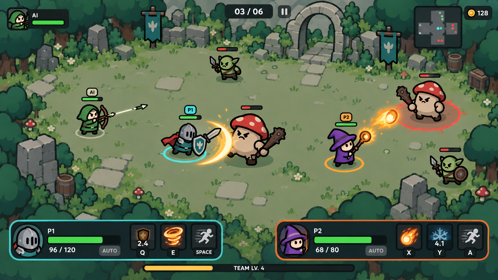
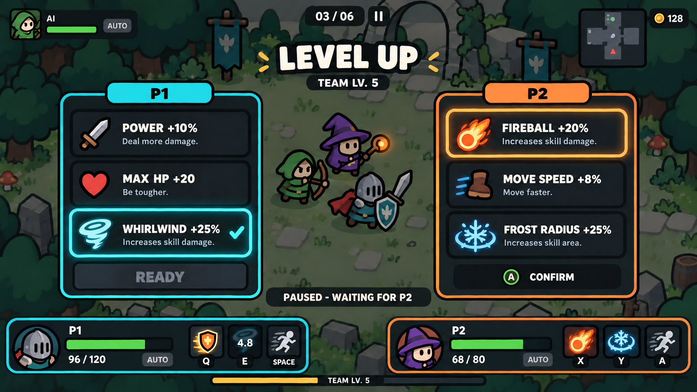

01 · 双人战斗
青色 P1、橙色 P2，颜色与文字编号同时识别。血量与技能冷却独立；普攻自动，不占操作键位。
P1 · 战士 / 键盘
WASD 走位 · Q 盾冲 · E 旋风斩 · Space 闪避
P2 · 法师 / 手柄
左摇杆 走位 · X 火球 · Y 冰霜环 · A 闪避
手柄图例采用 Xbox 字母布局。按键分配是本版设计约定，后续实现需支持重映射与对应设备提示。
共享战场和镜头，玩家分别控制战士与法师，弓手由 AI 跟随。职业可互换，这里展示一组搭配。
以下为内置 imagegen 生成的界面设计图，并非当前可运行游戏截图。对应的双人输入、AI 与升级已接入可玩样板，实际效果请以运行版本为准。 打开可玩版本 →

青色 P1、橙色 P2，颜色与文字编号同时识别。血量与技能冷却独立；普攻自动，不占操作键位。
WASD 走位 · Q 盾冲 · E 旋风斩 · Space 闪避
左摇杆 走位 · X 火球 · Y 冰霜环 · A 闪避
手柄图例采用 Xbox 字母布局。按键分配是本版设计约定，后续实现需支持重映射与对应设备提示。

共享经验、各自构筑。全局暂停，每位玩家控制自己的三选一；P1 确认后等待 P2，双方确认才恢复。AI 自动选择。
卡牌数值为展示占位，尚未平衡。确认界面中的 A 表示选择确认，战斗中的 A 表示闪避，按当前界面切换输入含义。
八方向、双手柄与手感实现约定 · 界面与操作设计 · 生成提示词 · 返回美术方向对照页